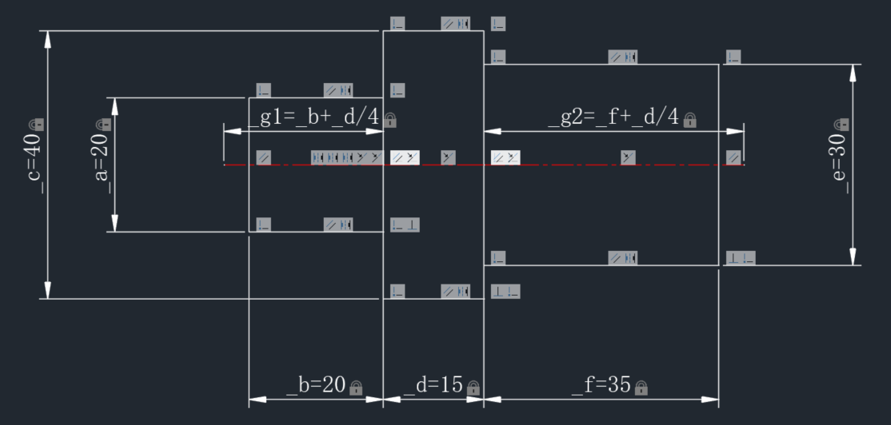

中望CAD的参数化功能主要包含两大核心：几何约束和尺寸约束。几何约束能够定义对象之间的几何关系，例如两条线段始终保持平行、垂直或相切，一个圆的圆心始终位于某条线的端点等。尺寸约束则允许用户为对象的尺寸（如长度、角度、半径）指定固定值或数学表达式。通过这些约束，用户可以创建出“智能”的图形对象，这些对象会根据用户设定的规则自动调整其形状和位置。
这些参数化功能显著提升了绘图的效率和灵活性。当用户需要修改设计时，不再需要手动调整每一个相关的对象。例如，如果用户改变了一个矩形的长度，与该长度相关联的其他几何图形（如通过共点约束连接的对象）会自动更新，确保设计意图的连贯性。这种关联性大大减少了因手动修改可能产生的错误，同时也使得探索不同的设计方案变得更加快捷。用户可以轻松地通过修改几个关键参数来驱动整个设计的变化，而无需担心破坏已有的几何关系。
最终，这些功能为用户带来的益处是显而易见的。首先，参数化设计能够大幅缩短设计周期。用户可以通过预设的约束条件快速生成和修改复杂图形，从而将更多精力投入到创新和优化设计本身。其次，它能够显著提高设计质量和精度。自动化的约束管理确保了设计元素之间关系的准确性，避免了人为疏忽导致的错误。最后，参数化功能使得设计变更和迭代更加轻松高效。无论是应对客户需求的变化，还是进行设计方案的优化调整，都可以通过简单修改参数来实现，极大地提升了工作的灵活性和响应速度，最终帮助用户交付更优秀、更可靠的设计成果。
下面我们将通过一个绘制三段轴的示例（见下图），介绍如何使用ZRX实现参数化约束功能，包括几何约束、尺寸约束和对参数进行重命名以及修改参数的表达式。由于示例比较大，处于篇幅考虑本文只介绍核心功能的实现。

三段轴绘制介绍
在这个三段轴的示例中，我们定义了一个变量_pos代表定位点，还有_a, _b, _c, _d, _e, _f这几个变量代表绘制参数（每个参数的代表的尺寸见上图）：
//位置坐标 ZcGePoint3d _pos; //绘制参数 double _a = 20.0; double _b = 20.0; double _c = 40.0; double _d = 70.0; double _e = 30.0; double _f = 35.0;
在绘制三段轴的时候，通过参数变量来绘制每一段轴的形状（矩形），见以下代码，其中自定义函数drawRect用于绘制矩形，具体实现不在此赘述。drawRect函数的第4、5个参数分别返回绘制的矩形的四条边（直线）的Id以及顶点坐标（从左下角点开始，逆时针顺序存储）
ZcDbObjectIdArray idsPart1, idsPart2, idsPart3; ZcGePoint3dArray ptsPart1, ptsPart2, ptsPart3; drawRect(_pos, _d, _c, idsPart2, ptsPart2); // 中间部分：宽度 _d，高度 _c drawRect(_pos - ZcGeVector3d(_d / 2.0 + _b / 2.0, 0, 0), _b, _a, idsPart1, ptsPart1); // 左边部分：宽度 _b，高度 _a drawRect(_pos + ZcGeVector3d(_d / 2.0 + _f / 2.0, 0, 0), _f, _e, idsPart3, ptsPart3); // 右边部分：宽度 _f，高度 _e
除此之外，我们还需要绘制中心线，以下是绘制中心线的代码。这段代码把中心线分成了三段来绘制，这是为了方便后面对中心线添加约束。其中自定义函数drawCenterLine函数用于绘制直线段，返回直线的Id。
ZcGePoint3d cp1, cp2, cp3, cp4; getCenterLinePts(cp1, cp2, cp3, cp4); //计算中心线各段的顶点坐标 auto clId1 = drawCenterLine(cp1, cp2); auto clId2 = drawCenterLine(cp2, cp3); auto clId3 = drawCenterLine(cp3, cp4);
至此，我们已经完成了三段轴的绘制。接下来需要给它添加各种约束，比如每个参数都要添加对应的尺寸约束，同一段轴的四条线段要添加共点约束，三段轴应该相对于中心线上下对称等等。受篇幅所限，接下来我们挑几种典型用法来进行介绍。
添加对称约束
要形成对称约束，需要两个对象和一条对称轴，在这个例子里我们选取第一段轴的上下两条边与中心线来构造对称约束。
为了便于描述，我们定义以下几个变量：entId1和entId2分别代表上下两条边的Id，entSymId代表中心线的Id。
ZcDbObjectId entId1 = idsPart1[0]; ZcDbObjectId entId2 = idsPart1[2]; ZcDbObjectId entSymId = clId1;
在执行参数化功能的相关操作前，都需要对参数化管理器进行初始化。
Zcad::ErrorStatus es = Zcad::eOk; if((es = ZcDbAssocManager::initialize()) != Zcad::eOk) return es;
在给实体添加约束时，需要指定添加到具体的子实体，为此需要指定子实体路径（ZcDbFullSubentPath）。在本例中，由于添加约束的实体是直线，所以子实体就是它本身，我们可以用ZcDbAssocPersSubentIdPE::getAllSubentities获取它的子实体路径。
ZcDbAssocPersSubentIdPE* const pAssocPersSubentIdPE = ZcDbAssocPersSubentIdPE::cast(pEnt->queryX(ZcDbAssocPersSubentIdPE::desc()));
ZcArray<ZcDbSubentId> subentIds;
if((es = pAssocPersSubentIdPE->getAllSubentities(entId1, subentType, subentIds)) != Zcad::eOk)
return es;
// 对于直线，这里获取的subentIds中应该只包含一个元素
ZcDbFullSubentPath edgeEntPath1(pEnt->objectId(), subentIds[i]);
ZcDbFullSubentPathArray aPaths;
aPaths.append(edgeEntPath1);
以上代码获取了第一段轴的下边的子实体路径并添加到数组aPaths中，重复该操作把上边和中心线的子实体路径也加入到aPaths中后，需要添加约束对象。约束对象需要添加到特定的约束组中，约束组可以用以下的方法获取：
ZcDbDatabase *pDatabase = zcdbHostApplicationServices()->workingDatabase();
ZcDbObjectId spaceId = pDatabase->currentSpaceId();
bool createIfDoesNotExist = true;
ZcDbObjectId idConstrGroup = ZcDbObjectId::kNull;
//获取约束网络
ZcDbObjectId networkId = ZcDbAssocNetwork::getInstanceFromObject(spaceId, true);
ZcGeMatrix3d ucsMatrix;
zcedGetCurrentUCS(ucsMatrix);
ZcGePoint3d origin;
ZcGeVector3d xAxis, yAxis, zAxis;
ucsMatrix.getCoordSystem(origin, xAxis, yAxis, zAxis);
ZcGePlane currentPlane(origin, xAxis, yAxis);
ZcDbObjectPointer<ZcDbAssocNetwork> pNetwork(networkId, kForRead);
if (pNetwork.openStatus() != Zcad::eOk)
{
idConstrGroup = ZcDbObjectId::kNull;
}
//获取或创建网络中的约束组
const ZcDbObjectIdArray& actionsInNetwork = pNetwork->getActions();
for (int nCount = 0; nCount < actionsInNetwork.length(); ++nCount)
{
const ZcDbObjectId& idAction = actionsInNetwork[nCount];
if (idAction == ZcDbObjectId::kNull)
continue;
if (actionsInNetwork[nCount].objectClass() == NULL ||
!actionsInNetwork[nCount].objectClass()->isDerivedFrom(ZcDbAssoc2dConstraintGroup::desc()))
continue;
ZcDbObjectPointer<ZcDbAssocAction> pAction(idAction, kForRead);
if (pAction.openStatus() != Zcad::eOk)
continue;
const ZcDbAssoc2dConstraintGroup* const pConstGrp =
static_cast<ZcDbAssoc2dConstraintGroup*>(pAction.object());
if (!pConstGrp)
continue;
if (currentPlane.isCoplanarTo(pConstGrp->getWorkPlane()))
{
// We have an constraint group which is built on same UCS
idConstrGroup = idAction;
}
}
if (idConstrGroup.isNull() && createIfDoesNotExist)
{
ZcDbObjectPointer<ZcDbAssocNetwork> pNetwork(networkId, kForWrite);
if (pNetwork.openStatus() != Zcad::eOk)
{
idConstrGroup = ZcDbObjectId::kNull;
}
ZcDbAssoc2dConstraintGroup* const pConstrGroup = new ZcDbAssoc2dConstraintGroup(currentPlane);
ZcDbDatabase *pDatabase = pNetwork->database();
if (pDatabase->addZcDbObject(idConstrGroup, pConstrGroup) != Zcad::eOk)
{
delete pConstrGroup;
idConstrGroup = ZcDbObjectId::kNull;
}
pConstrGroup->close();
if (pNetwork->addAction(idConstrGroup, true) != Zcad::eOk)
{
idConstrGroup = ZcDbObjectId::kNull;
}
}
if(idConstrGroup.isNull())
return Zcad::eInvalidInput;
ZcDbObjectPointer<ZcDbAssoc2dConstraintGroup> p2dConstrGrp(idConstrGroup, kForWrite);
if ((es = p2dConstrGrp.openStatus()) != Zcad::eOk )
return es;
然后就可以按顺序根据aPaths中的子实体路径创建约束对象了：
for(int i=0; i < aPaths.length(); ++i)
{
ZcConstrainedGeometry* pConsGeom = NULL;
es = p2dConstrGrp->addConstrainedGeometry(aPaths[i], pConsGeom);
if(!((es == Zcad::eAlreadyInGroup) || (es == Zcad::eOk)))
return es;
}
最后是添加对称约束：
ZcGeomConstraint::GeomConstraintType = ZcGeomConstraint::kSymmetric;
ZcGeomConstraint **ppNewConstraint = NULL;
if ((es = p2dConstrGrp->addGeometricalConstraint(constraintType, aPaths, ppNewConstraint)) != Zcad::eOk)
return es;
添加尺寸约束
要形成尺寸约束，需要两个对象（它们可以是同一个对象）、两个约束点和一个位置点，在这个例子里我们对中心线的第一段添加尺寸约束。
在正式开始介绍操作步骤前，我们不妨假设已经定义了以下几个变量并已设置好它们的值。
ZcDbObjectId entId1; //中心线的第一段 ZcDbObjectId entId2; //与entId1是同一个Id ZcGePoint3d entPt1; //中心线第一段的起点 ZcGePoint3d entPt2; //中心线第一段的终点 ZcGePoint3d dimPos; //尺寸约束的位置点
此外，跟构造对称约束时一样，我们需要获取要添加约束的实体的子实体路径，可以使用与对称约束示例中同样的方法得到。这里我们假设已获取到子实体路径并保存到数组中。
ZcDbFullSubentPath edgeEntPath1; //中心线第一段的子实体路径 ZcDbFullSubentPath edgeEntPath2; //与edgeEntPath1一样 ZcDbFullSubentPathArray aPathsEdge; aPathsEdge.append(edgeEntPath1); aPathsEdge.append(edgeEntPath2);
拿到子实体路径后，同样的我们需要创建约束对象，该步骤也跟构造对称约束时一样，在此不再赘述。
ZcArray<ZcConstrainedGeometry*> pConsGeoms; //存储创建好的约束对象的数组
接下来我们要创建一个普通的转角标注，其尺寸线的顶点与中心线第一段的起点和终点一致，位置点使用尺寸约束的位置点。具体创建方法请参考 常用实体的创建和编辑 章节的内容，这里假设已创建标注并把它的Id保存在变量dimId中。
同时我们稍后在创建尺寸约束时需要把这个标注的测量值（即中心线第一段的长度）设置为约束参数的初始值，所以这里假设已经获取到了标注的测量值并保存在变量measurement中。之后还要把该测量值转为字符串，保存在变量expression中。
另外我们还需要定义约束参部的名字，在这里我们定义要添加的约束参数为 d1，保存在变量name中。
ZcDbObjectId dimId; // 标注的Id
double measurement; // 标注的测量值
ZcString expression; //测量值的字符串形式
expression.format(_T("%.2f"), measurement);
ZcString name = _T("d1"); //参数名称
然后我们就可以添加一个约束参数了。以下代码假定我们已经获取到了约束网络的指针pNetwork。
ZcDbObjectId varDimId; // 约束参数的Id //创建约束参数 ZcDbAssocVariable* const pVar = new ZcDbAssocVariable(); if ((es = pNetwork->database()->addZcDbObject(varDimId, pVar)) != Zcad::eOk) return es; pVar->close(); if ((es = pNetwork->addAction(varDimId, true)) != Zcad::eOk) return es; //设置约束参数的名称和初始值 if ((es = pVar->setName(name, true))!= Zcad::eOk) return es; ZcDbObjectPointer<ZcDbAssocVariable> pAssocVar (varDimId, kForWrite); ZcString errMsgValidate(L"非法的名称或表达式"); if((es = pAssocVar->validateNameAndExpression(name, L"1.0", errMsgValidate)) != Zcad::eOk) return es; if((es = pAssocVar->setName(name, true)) != Zcad::eOk) return es; pAssocVar->setValue(ZcDbEvalVariant(1.0)); if((es = pAssocVar->setExpression(expression, EXPRESSION_EVALUATOR_DEFAULT, true, true)) != Zcad::eOk) return es; ZcString errMsgEval(L"表达式计算失败"); ZcDbEvalVariant evaluatedExpressionValue; if((es = pAssocVar->evaluateExpression(evaluatedExpressionValue, errMsgEval)) != Zcad::eOk) return es; if((pAssocVar->setValue(evaluatedExpressionValue)) != Zcad::eOk) return es;
之后还要创建约束值依赖、约束依赖和尺寸约束依赖主体。
ZcDbObjectId varDepId; // 约束值依赖的Id
ZcDbObjectId dimDepId; //约束依赖的Id
ZcDbObjectId dimDepBodyId; //尺寸约束依赖主体的Id
ZcDbAssocValueDependency* pValDep = new ZcDbAssocValueDependency();
if((es = pNetwork->database()->addZcDbObject(varDepId, pValDep)) != Zcad::eOk)
{
delete pValDep;
return es;
}
if((es = pValDep->attachToObject(ZcDbCompoundObjectId(varDimId))) != Zcad::eOk)
return es;
if((es = pValDep->close()) != Zcad::eOk)
return es;
if((es = ZcDbAssocDimDependencyBody::createAndPostToDatabase(dimId, dimDepId, dimDepBodyId)) != Zcad::eOk)
return es;
最后一步就是使用上面获取/创建的参数创建尺寸约束了。
ZcDbDatabase* pDb = zcdbHostApplicationServices()->workingDatabase(); ZcDbObjectId spaceId = pDb->currentSpaceId(); ZcGeVector3d fixedDirection(1, 0, 0); ZcGeMatrix3d ucs; zcedGetCurrentUCS(ucs); ZcGeVector3d fixedDirectionUcs(fixedDirection); fixedDirectionUcs.transformBy(ucs); ZcDistanceConstraint** ppNewDisConstraint = NULL; if((err = AdnAssocSampleUtils::createDistanceConstraint(varDepId, dimDepId, pConsGeoms[0], entPt1, pConsGeoms[1], entPt2, &fixedDirectionUcs, pDb, spaceId, ppNewDisConstraint))!= Zcad::eOk) throw err; ZcDbAssocDimDependencyBodyBase::setEraseDimensionIfDependencyIsErased(bPreviousValue);
修改参数名称
约束参数在创建后是可以对其名称进行修改的，方法如下：
首先要拿到约束参数的Id，比如在上面的示例中的varDimId，然后就可以打开约束对象调用其setName方法来设置新的名称。
ZcString newName = _T("_g1"); //新的名称
ZcDbObjectPointer<ZcDbAssocVariable> pAssocVar(varDimId, kForWrite);
if ((es = pAssocVar->setName(newName, true)) != Zcad::eOk)
return es;
修改参数值
修改约束参数值的方法也是类似，调用的是setValue方法，不过在修改参数值前要先做一些校验，避免设置了错误的值导致出现异常。
ZcString expression = _T("_b+_d/4"); //新的表达式
ZcString errorMessage = _T("错误的表达式");
if((es = pAssocVar->validateNameAndExpression(pAssocVar->name(), expression, errorMessage)) != Zcad::eOk)
return es;
if((es = pAssocVar->setExpression(expression,
EXPRESSION_EVALUATOR_DEFAULT,
true,
true,
errorMessage)) != Zcad::eOk)
return es;
ZcDbEvalVariant evaluatedExpressionValue;
if((es = pAssocVar->evaluateExpression(evaluatedExpressionValue, errorMessage)) != Zcad::eOk)
return es;
if((pAssocVar->setValue(evaluatedExpressionValue)) != Zcad::eOk)
return es;